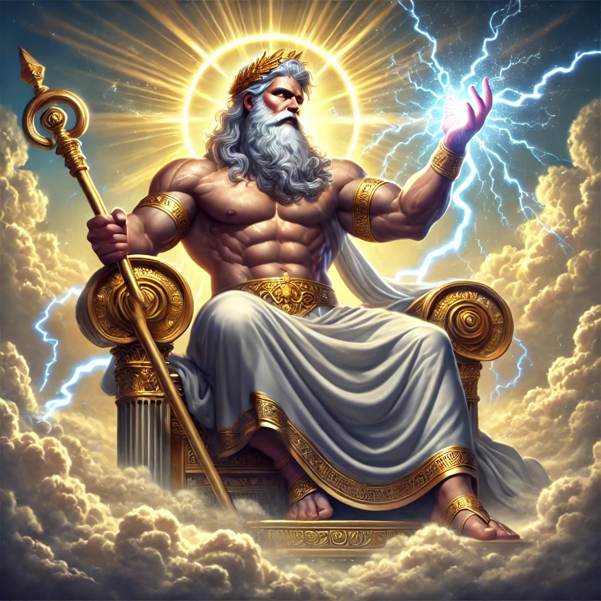
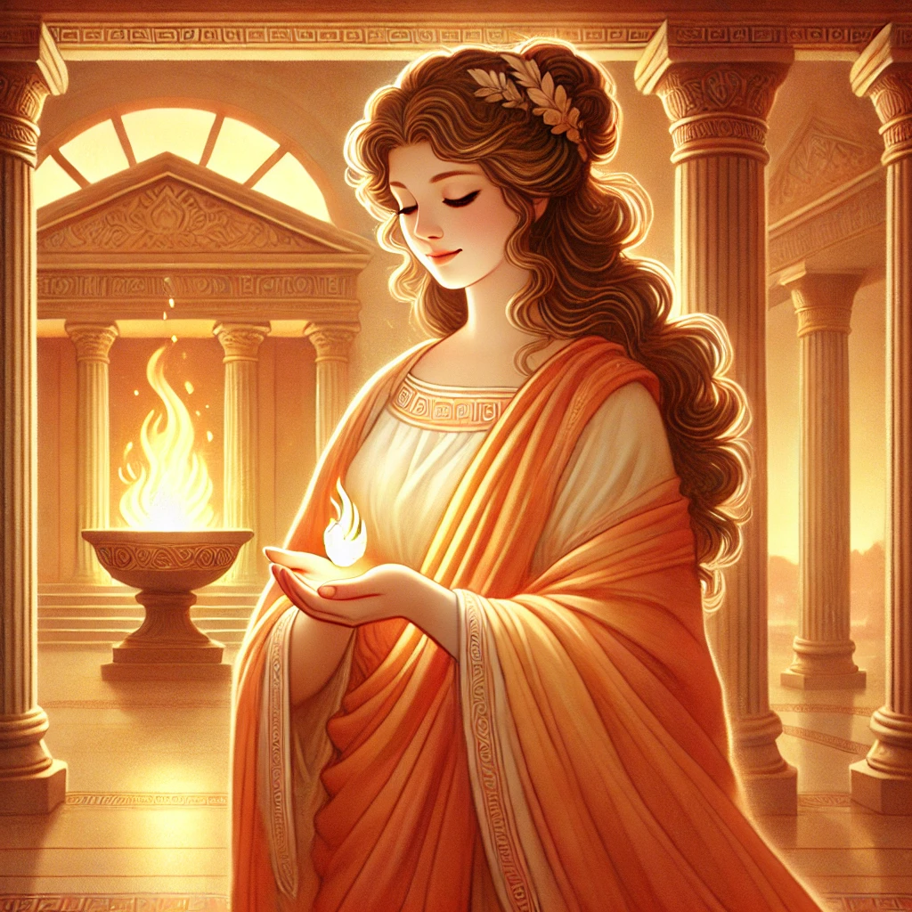

<!DOCTYPE html>
<html lang="en">
<head>
    <meta charset="UTF-8">
    <meta name="viewport" content="width=device-width, initial-scale=1.0">
    <title>Artemis - Greek Mythology with Mr. Sovocool</title>
    <style>
        body {
            font-family: Arial, sans-serif;
            margin: 0;
            padding: 0;
            background-image: url('background.webp');
            background-size: cover;
            background-attachment: fixed;
            background-position: center;
            background-repeat: no-repeat;
            color: white;
        }
        .header-banner {
            background-color: rgba(0, 0, 139, 0.8);
            width: 100%;
            text-align: center;
            padding: 20px 0;
            position: relative;
        }
        .header-banner img {
            max-width: 60%;
            height: auto;
        }
        .container {
            padding: 20px;
            background-color: rgba(0, 0, 0, 0.75);
            margin: 20px;
            border-radius: 10px;
            text-align: center;
        }
        .container h1 {
            color: yellow;
            font-size: 40px;
        }
        .container h3 {
            font-size: 22px;
            font-style: italic;
            font-weight: normal;
            color: white;
        }
        .container p {
            text-align: left;
            font-size: 20px;
            margin: 10px 0;
        }
        .container p strong {
            color: yellow;
        }
        .container p em {
            font-style: italic;
            color: white;
        }
        .god-image {
            width: 50%;
            max-width: 400px;
            border-radius: 10px;
        }
        .grid {
            display: grid;
            grid-template-columns: repeat(5, 1fr);
            gap: 20px;
            max-width: 900px;
            margin: 0 auto;
        }
        .grid a {
            text-decoration: none;
            color: white;
            font-size: 18px;
            font-weight: bold;
            display: flex;
            flex-direction: column;
            align-items: center;
            justify-content: center;
            position: relative;
            border-radius: 10px;
            overflow: hidden;
        }
        .grid img {
            width: 100%;
            height: auto;
            border-radius: 10px;
        }
        .grid span {
            position: absolute;
            bottom: 10px;
            background-color: rgba(0, 0, 0, 0.6);
            color: white;
            padding: 5px 10px;
            border-radius: 5px;
        }
    </style>
</head>
<body>
    <div class="header-banner">
        
    </div>
    <div class="container">
        <h1>Artemis</h1>
        <h3>Goddess of the Hunt, Wilderness, Wild Animals, Childbirth, and the Moon</h3>
        
        
	<p><strong>Roman Name:</strong> <em>Diana (same as Greek)</em></p>        
	<p><strong>Parents:</strong> <em>Zeus and Leto</em></p>
        <p><strong>Spouse(s):</strong> <em>None</em></p>
        <p><strong>Siblings:</strong> <em>Apollo (twin brother)</em></p>
        <p><strong>Children:</strong> <em>None</em></p>
        <br>
        <p>Artemis is the Greek goddess of the hunt, the wilderness, wild animals, childbirth, and the moon. She is the daughter of Zeus and Leto and the twin sister of Apollo. According to myth, Artemis was born first and then helped her mother deliver Apollo. Because of this, she became associated with childbirth and young children.</p>
        <p>As a virgin goddess, Artemis swore never to marry and was known for her independence. She spent most of her time in the forests and mountains, hunting with her silver bow and arrows, accompanied by a group of nymphs and sacred animals. She was a protector of young girls and often punished those who harmed women or animals. However, she was also fierce and could be vengeful when disrespected.</p>
        <p>Artemis was deeply connected to nature and was believed to bring both life and death. While she protected wild animals, she was also a skilled hunter. Over time, she became linked to the moon, taking on a role similar to the Titan goddess Selene.</p>
        <br>
      <p><strong style="color: yellow;">Notable Stories About Artemis:</strong></p>
        <ul style="text-align: left; font-size: 20px; list-style-type: none; padding-left: 40px;">
            <li><a href="#birth-on-delos" style="color: white; text-decoration: underline; font-weight: normal;">The Birth of Artemis and Apollo</a></li>
            <li><a href="#actaeon" style="color: white; text-decoration: underline; font-weight: normal;">Actaeon’s Punishment</a></li>
            <li><a href="#orion" style="color: white; text-decoration: underline; font-weight: normal;">Orion’s Fate</a></li>
            <li><a href="#iphigenia" style="color: white; text-decoration: underline; font-weight: normal;">Iphigenia’s Rescue</a></li>
               
        </ul>
      <br>  
      <h2 id="birth-on-delos" style="color: yellow; font-weight: bold; text-align: center;">The Birth of Artemis and Apollo</h2>
        <p>Leto, a kind and gentle Titaness, was expecting twins, the children of Zeus. But Zeus’ wife, the powerful and jealous Hera, was furious. She declared that no land under the sun could offer Leto a place to give birth. Desperate and in pain, Leto wandered across the world, searching for a safe place for her children to be born.</p> <p>After a long journey, Leto found the floating island of Delos. It was a small, rocky place, drifting on the sea, not firmly connected to the earth. Because of this, it was not bound by Hera’s curse. Leto begged the island to shelter her, promising that her children would bring it great honor. Delos agreed, and the island became rooted to the ocean floor, finally still and strong.</p> <p>But Leto’s troubles were not over. Hera had forbidden Eileithyia, the goddess of childbirth, from helping Leto. Without her, Leto suffered in labor for nine long days and nights. The other goddesses took pity on her and sent Iris, the messenger of the gods, to secretly bring Eileithyia to Delos. At last, Leto was able to give birth.</p> <p>First, she brought her daughter, Artemis, into the world. The newborn goddess was strong, wise, and independent. Almost immediately, she helped her mother through the pain of childbirth. With Artemis’ aid, Leto then gave birth to her second child, Apollo. As soon as he was born, the island bloomed with golden light, and the world rejoiced.</p> <p>Apollo and Artemis were twins, but they were different in many ways. While Apollo would become the god of the sun, music, and prophecy, Artemis was destined to be the goddess of the moon, the hunt, and wild animals. Though they had different paths, they would always share a special bond as twin siblings.</p> <p>Because of their birth, Delos became one of the most sacred places in Greece. Apollo and Artemis would grow into powerful gods, each ruling over light in their own way—Apollo with the sun and prophecy, and Artemis with the moon and nature. Together, they brought balance to the world, and their mother, Leto, was honored for giving birth to two of the greatest Olympian gods.</p>

      <br>  
      <h2 id="actaeon" style="color: yellow; font-weight: bold; text-align: center;">Actaeon’s Punishment</h2>
        <p>Actaeon was a skilled hunter who loved exploring the deep forests with his pack of hunting dogs. One day, after a long morning of chasing deer, he wandered away from his friends. As he walked through the trees, he came upon a sparkling, hidden spring. Curious, he stepped closer, not knowing that the goddess Artemis was bathing there with her nymphs.</p> <p>Artemis, the goddess of the hunt and the wilderness, valued her privacy. She had sworn to remain untouched by any man, and no mortal was ever supposed to see her bathe. But Actaeon, without meaning to, had broken this sacred rule. As he stood frozen in shock, the nymphs gasped and tried to cover their goddess. Artemis turned and saw Actaeon staring at her.</p> <p>Fury filled her eyes. “How dare you look upon me!” she shouted. Though Actaeon had not meant any harm, Artemis would not forgive such an offense. She lifted her hand and splashed water at him. “Since you love to hunt, you shall become the hunted!” she declared.</p> <p>Immediately, Actaeon felt his body begin to change. His hands stretched into legs, his fingers curled into hooves, and his skin became covered in fur. He tried to scream, but no words came—only the sound of a frightened stag. Artemis had turned him into a deer.</p> <p>Terrified, Actaeon ran through the woods, but his own hunting dogs caught his scent. They did not recognize their master. The dogs, trained for the hunt, chased him down with unstoppable speed. Actaeon tried to escape, but they surrounded him. In moments, they leaped upon him, bringing him down just as they had done to so many other deer before.</p> <p>Artemis watched from a distance, her face unreadable. Some say she felt no regret, for she had only defended her honor. Others believe she looked away, knowing that Actaeon had not intended to see her but unable to undo her curse. Either way, the hunter had become the hunted, and his tragic fate was sealed.</p>
        <br>
          <h2 id="orion" style="color: yellow; font-weight: bold; text-align: center;">Orion’s Fate</h2>
        <p>Orion was a mighty hunter, known across the lands for his incredible strength and skill. He was tall and strong, able to defeat the fiercest beasts with ease. Some say he was the son of Poseidon, which gave him the power to walk on water. Wherever he went, people admired his bravery, and many called him the greatest hunter in the world.</p> <p>One day, Orion met Artemis, the goddess of the hunt and the wilderness. The two shared a love for hunting, and they spent many days roaming the forests together, chasing deer and exploring the wild. Some say Orion and Artemis became close friends, while others believe he wished to marry her. But Artemis had sworn never to love any man, and her twin brother, Apollo, did not trust Orion.</p> <p>There are different stories about how Orion met his end. In one version, Orion became arrogant and claimed he would hunt and kill every animal on Earth. This angered Gaia, the Earth goddess, who sent a giant scorpion to stop him. The two battled fiercely, but the scorpion’s sting was deadly, and Orion fell.</p> <p>In another version, Apollo feared that Artemis was growing too fond of Orion. One day, as Orion swam far out into the sea, Apollo pointed to a small dark shape in the water and challenged Artemis to hit it with her bow. Not knowing it was Orion, she aimed carefully and fired. Her arrow struck true, and Orion sank beneath the waves. When Artemis swam out and found that she had killed her friend, she was heartbroken.</p> <p>To honor Orion, Artemis placed him among the stars as a bright constellation. Even today, on clear nights, you can see the mighty hunter in the sky, with his belt of three shining stars and his loyal hunting dog nearby. But just behind him, the great scorpion still follows, forever chasing Orion across the heavens.</p>
      <br>  
      <h2 id="iphigenia" style="color: yellow; font-weight: bold; text-align: center;">Iphigenia’s Rescue</h2>
        <p>The Greek king Agamemnon was preparing to sail to Troy with his army, but the winds would not blow. The sea was calm, and his ships could not move. The goddess Artemis was angry with him because he had killed one of her sacred deer and boasted that he was a better hunter than she was. To punish him, she stopped the winds and refused to let the Greek fleet leave.</p> <p>Desperate, Agamemnon asked the priests what he could do to fix the problem. They told him that Artemis demanded a great sacrifice—his own daughter, Iphigenia. Only if he offered her life would the winds return. Agamemnon was heartbroken, but he also feared losing the war before it even began. After much hesitation, he sent for Iphigenia, telling her mother, Queen Clytemnestra, that she was to marry the hero Achilles.</p> <p>When Iphigenia arrived at the camp, she was excited, believing she was about to wed a great warrior. But when she learned the truth—that her father planned to sacrifice her—she was terrified. Some say she bravely accepted her fate, while others say she and her mother begged for mercy. Either way, the priests prepared the altar, and Iphigenia was led forward.</p> <p>Just as the knife was about to fall, Artemis took pity on the girl. In a flash of divine power, she replaced Iphigenia with a deer and carried the girl away to safety. When the priests looked down, they saw the animal in her place, and the sacrifice was complete. The winds returned, and the Greeks set sail for Troy, believing that Iphigenia was gone forever.</p> <p>Artemis had not killed Iphigenia, though. Instead, she took her to a distant land, where she became a priestess in the goddess’s temple. There, she served Artemis for many years, far from her family, until she was eventually reunited with her brother, Orestes. Though she had lost her old life, she had been spared from death, all thanks to the mercy of Artemis.</p>
      <br>  
          </div>
<br>
        <p style="text-align: center; font-weight: bold;">Click on an image below to learn more about the Olympians:</p>
        <div class="grid">
            <a href="index.html"><span>Home</span></a>
	    <a href="zeus.html"><span>Zeus</span></a>
            <a href="hera.html"><span>Hera</span></a>
            <a href="poseidon.html"><span>Poseidon</span></a>
            <a href="demeter.html"><span>Demeter</span></a>
            <a href="athena.html"><span>Athena</span></a>
            <a href="apollo.html"><span>Apollo</span></a>
            <a href="ares.html"><span>Ares</span></a>
            <a href="aphrodite.html"><span>Aphrodite</span></a>
            <a href="hephaestus.html"><span>Hephaestus</span></a>
            <a href="hermes.html"><span>Hermes</span></a>
            <a href="dionysus.html"><span>Dionysus</span></a>
            <a href="hades.html"><span>Hades</span></a>
            <a href="hestia.html"><span>Hestia</span></a>
        </div>
		<br><br>
    <p class="copyright" style="text-align: center;">&copy; 2025 Stephen Sovocool</p>
    </div>
</body>
</html>
